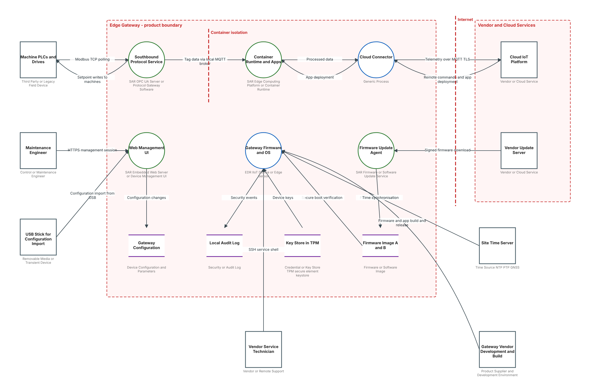
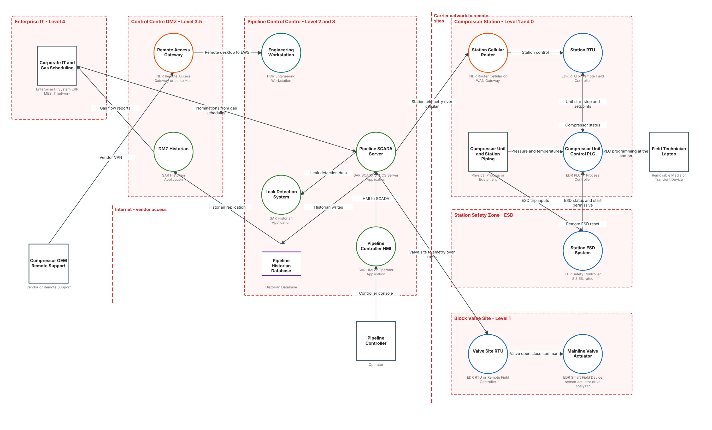

예제#
examples 폴더에 완성된 모델 두 개가 있습니다. Open A Model로 열고 Analysis View로 전환해 보세요.
산업용 엣지 게이트웨이 (제품 템플릿)#
examples/Industrial Edge Gateway - Product Threat Model.tm7은 산업용 IoT 엣지 게이트웨이를 IEC 62443-4-2 구성요소로 모델링한 것입니다. 위협 138개를 생성합니다.

| 위치 | 요소 |
|---|---|
| 제품 경계 안 | Southbound Protocol Service, Container Runtime and Apps(Container isolation 권한 경계 뒤), Cloud Connector, Web Management UI, Gateway Firmware and OS, Firmware Update Agent, Gateway Configuration, Local Audit Log, Key Store in TPM, Firmware Image A and B |
| 인터넷 경계 너머의 벤더·클라우드 | Cloud IoT Platform, Vendor Update Server |
| 플랜트 쪽 | Machine PLCs and Drives, Maintenance Engineer, Vendor Service Technician, USB Stick for Configuration Import, Site Time Server, Gateway Vendor Development and Build |
보여 주는 내용:
- 기계는 보안 없는 Modbus TCP로 폴링합니다. 원격 측정과 명령은 TLS 기반 MQTT를 씁니다. 펌웨어는 HTTPS로 내려받아 검증한 뒤 A/B 이미지에 기록합니다. 키는 TPM에 있습니다.
- 하드웨어 플랫폼은 물리적으로 노출되어 있고 디버그 포트, USB, 무선이 있습니다. 장치 위협(보안 부팅, 디버그 인터페이스, 키 추출)은 앵커 흐름에서 한 번만 나타납니다. 소프트웨어 기능들은 이 플랫폼에서 실행되므로 호스트 위협이 반복되지 않습니다.
- 공급업체의 빌드 파이프라인 흐름이 공급망 위협(OT-T28, OT-S12)을, 컨테이너 경계가 격리 위협(OT-E23)을 가집니다. 읽기 전용 키 저장소는 나가는 흐름에서 저장 데이터 위협(OT-I11R)을 받습니다.
천연가스 배관 (플랜트 템플릿)#
examples/Gas Pipeline - Site Risk Assessment.tm7은 가스 수송 배관을 평가한 것입니다. 위협 114개를 생성합니다.

| 영역 (결과, SL-T / SL-A) | 요소 |
|---|---|
| Enterprise IT, Level 4 (경미) | Corporate IT and Gas Scheduling |
| Control Centre DMZ, Level 3.5 (보통) | Remote Access Gateway, DMZ Historian |
| Pipeline Control Centre, Level 2·3 (중대, SL-T 2 / SL-A 2) | Pipeline SCADA Server, Pipeline Controller HMI, Engineering Workstation, Leak Detection System(지원 종료), Pipeline Historian |
| Compressor Station, Level 1·0 (재앙적, 무인, SL-T 2 / SL-A 1) | Station Cellular Router, Station RTU, Compressor Unit Control PLC, Compressor Unit and Station Piping |
| Station Safety Zone, ESD (재앙적, 무인, SL-T 3 / SL-A 1) | Station ESD System |
| Block Valve Site, Level 1 (중대, 무인, SL-T 2 / SL-A 0) | Valve Site RTU, Mainline Valve Actuator |
| 영역 밖 | Compressor OEM Remote Support(상시 VPN), Pipeline Controller, Field Technician Laptop |
평가에서 드러나는 점:
- 공중망을 쓰는 원격 사이트: 압축기 스테이션의 원격 측정은 보안 없는 DNP3를 셀룰러로 보내고, 밸브 사이트는 허가 무선을 씁니다.
- 업무 의존성: 가스 공급 지시(nomination)가 도관 장치 없이 기업 스케줄링 시스템에서 SCADA로 바로 들어옵니다. 2021년 Colonial Pipeline 가동 중단의 배경이 된 IT-OT 의존성입니다(PL-E01, PL-E02).
- 안전: 압축기 PLC가 ESD를 원격으로 리셋할 수 있어 제어 쪽에서 안전 시스템에 접근할 수 있습니다(PL-E10, PL-T07). 하드와이어 트립 입력에는 현장 배선 위협(PL-T11)이 적용됩니다.
- 사이트 운영 관행: 공유 계정, 하드닝되지 않은 RTU, 원격 사이트 모니터링 부재, 상시 연결된 OEM VPN(PL-E05), PLC 프로그래밍에 쓰는 현장 노트북(PL-T09).
직접 만들어 보기#
두 예제는 examples/specs/에 JSON으로도 있습니다. build_model.py로 다시 만들거나, 여러분의 시스템을 모델링하는 출발점으로 쓰세요.